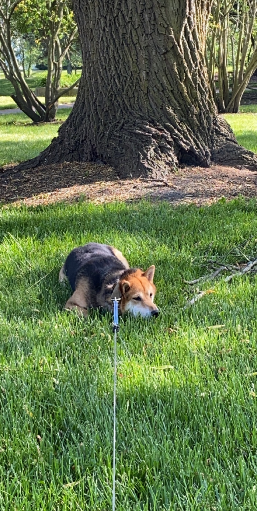
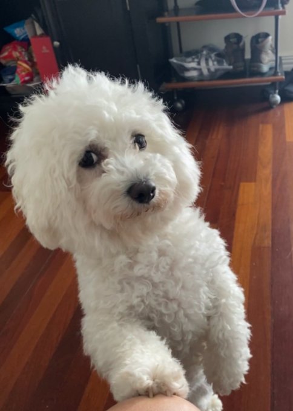
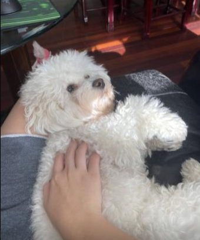
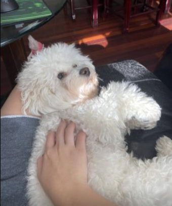

Lincoln
A Yellow Lab

Lincoln is a very intellegent dog. There are times where i dont go pet him and you can see it in his eyes, he is holding a grudge. For the next hour or so he wont come whan I call him but will look at me with eyes that say, you did this. Another example of his intellegence is he is an ace at hide and seek, as well as other games a dog should not be able to play.
Lincoln is not a huge fan of his brother (my other dog), Rainier. When Rainier geats any form of attention, Lincoln will put himself into the scene and bark as if he is being mistreated. He is noit being mistreated, Lincoln is just a wimp.
Photo Gallery


Bear
A Black, White, and Tan Shiba Inu

Bear is a lazy, food-loving dog that is sometimes playful. His favorite activity is lying in the sun on his side and lounging. He enjoys playing with his toys and loves to fetch them when you throw them, but eventually, he gets bored and just stops fetching them and lays down.
Bear is also scared of a lot of things. He doesn’t like water (showers and even rain) or getting his nails clipped, and he’s sometimes even so lazy that he’ll just stop walking and sit down until you turn around and go back home.
Photo Gallery


Luna
A Mini German Shepherd

Luna is a German shepherd mix and a fireball of energy. Oftentimes, destroying anything in her path she will take and hide all your socks, shoes, and clothes for her to chew on. She loves playing catch at the park, it always gives her the zoomies.
Luna is a very jealous, loving, and protective dog. She really embraces her inner chihuahua and will bark at any stranger, car, or noise at night. She makes the perfect guard dog. But she is not at all aggressive. Luna is all bark no bite!
Photo Gallery


Basil
A Fluffy White Bichon
Basil, otherwise known as Slaysil, is a very energetic white, slightly crusty and trusty, dog (bichon) . She gets princess treatment in her household, but also out in public. As a consequence, she is very clingy and loves to lick, especially in the face.
She endeavors in multiple hobbies and activities, which include flying, licking, standing on two legs, ringing bells, and jumping through hula hoops.
Photo Gallery


 

Terry
A Black Dachsund

Terry is a playful and spirited dachshund that loves to play fetch with his bone or tennis ball. He loves wandering in forests and finding large sticks to take home. His favorite foods are kibble and peanut butter. Terry will run around frantically when it’s time to eat at home.
My family found Terry at a shelter and decided to adopt it. He was 4 months old and is now 8 years old. Terry knows how to swim, but we don’t tend to go often. Terry got poison ivy once; however, he quickly recovered and has been doing great since.
Photo Gallery